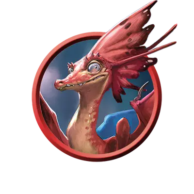

Молодой волшебный дракончик
Faerie Dragon Youth
Крошечный Дракон, Хаотичный Добрый

Класс Защиты 13 Инициатива +3 (13)
Хиты 21 (6к4 + 6)
Скорость 10 футов, Полёта 60 футов
| мод | спас | ||
|---|---|---|---|
| СИЛ | 3 | −4 | −4 |
| ЛОВ | 16 | +3 | +3 |
| ТЕЛ | 12 | +1 | +1 |
| мод | спас | ||
|---|---|---|---|
| ИНТ | 12 | +1 | +1 |
| МДР | 12 | +1 | +1 |
| ХАР | 14 | +2 | +2 |
Чувства Тёмное зрение 60 футов, пассивное Восприятие 13
Языки Драконий, Сильван, Телепатия 60 фт. (только с волшебными дракончиками)
Опасность 1 (200 опыта; БВ +2)
Особенности
Сопротивление магии. Молодой волшебный дракончик совершает с Преимуществом спасброски от заклинаний и прочих магических эффектов.
Действия
Укус. Бросок рукопашной атаки: +5, досягаемость 5 фт. Попадание: 5 (1к4 + 3) Колющего урона плюс 2 (1к4) Психического урона.
Эйфорическое дыхание (Перезарядка 5–6). Спасбросок Мудрости: Сл 12, каждое существо в 15-футовом Конусе. Провал: Цель становится Недееспособна до конца своего следующего хода и тратит всю свою Скорость на перемещение в случайном направлении.
Сотворение заклинаний. Дракончик сотворяет одно из следующих заклинаний, не нуждаясь в Материальных компонентах (заклинательная характеристика — Харизма, Сл спасброска заклинаний 12):
Неограниченно: Волшебная рука, Малая иллюзия, Пляшущие огоньки
Бонусные действия
Превосходная невидимость. Дракончик сотворяет Высшую невидимость на себя, не нуждаясь в компонентах (заклинательная характеристика — та же, что для Сотворения заклинаний).
Бонус мастерства +2
Среда обитания Горы, Подземье, Холмы
Сокровища Личные
Волшебные дракончики
Причудливые драконы-обманщики
Волшебные дракончики — маленькие драконоподобные создания с крыльями, как у бабочек, которые обожают устраивать розыгрыши. С возрастом цвет их чешуи постепенно меняется от тёплого к холодному оттенку.
Молодые волшебные дракончики не стесняются использовать своё эйфорическое дыхание на невежливых или заносчивых существах.